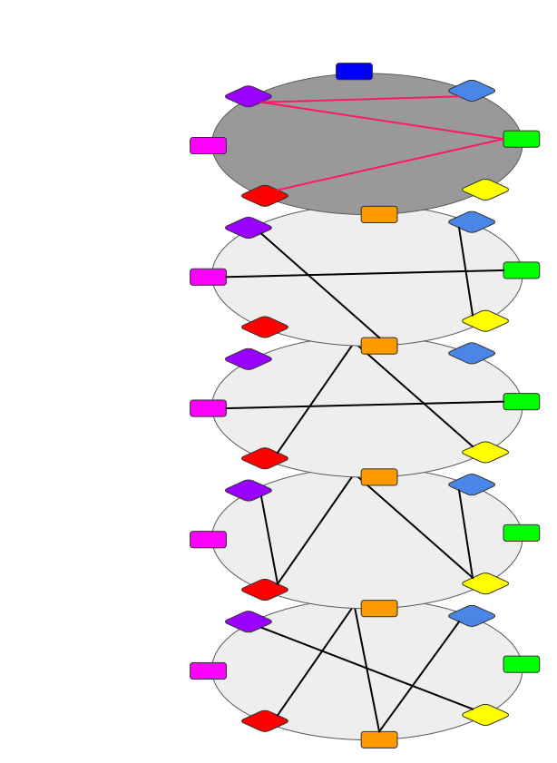

<!DOCTYPE html>
<html lang="en">

<head>
  <meta charset="utf-8" />
  <meta name="viewport" content="width=device-width, initial-scale=1.0, maximum-scale=1.0, user-scalable=no" />

  <title>What is Shared Security?</title>
  <link rel="icon" href="./../../assets/favicon.svg" />
  <link rel="shortcut icon" href="./../../assets/favicon.png" />
  <link rel="stylesheet" href="./../../dist/reset.css" />
  <link rel="stylesheet" href="./../../dist/reveal.css" />
  <link rel="stylesheet" href="./../.././assets/styles/PBA-theme.css" id="theme" />
  <link rel="stylesheet" href="./../../css/highlight/shades-of-purple.css" />

  <link rel="stylesheet" href="./../.././assets/styles/custom-classes.css" />

</head>

<body class="site">
  <header class="site-header">
    <!-- This logo is a link only on the watching server, not the production build -->
    <a href="">
      
    </a>
  </header>
  <main class="reveal">
    <article class="slides">
      <section  data-markdown><script type="text/template">

# What is Shared Security?
</script></section><section  data-markdown><script type="text/template">
## On the surface...

Shared Security is an Economic Scaling Solution for Blockchains.
</script></section><section  data-markdown><script type="text/template">
<div class="grid grid-cols-2">
<div>

But that is just an answer that sits at the surface.
The topic goes much deeper than that.

Let’s explore…

</div>
<div>


</div>
</div>
</script></section><section  data-markdown><script type="text/template">
## What is Security?

Nearly every attack to a blockchain falls into one of these two buckets:

- Technical Security (cryptography)
- Economic Security (game theory + economics)

We will focus on Economic Security.
</script></section><section  data-markdown><script type="text/template">
Economic Security is represented by the economic cost to change the canonical history of a blockchain.


Chains with higher security are more resilient to malicious activity, like a double spend attack.
</script></section><section  data-markdown><script type="text/template">
## Note that a double spend is not inherently an attack!

<pba-cols>
<pba-col>

It is perfectly allowed in all blockchain protocols to sign and submit two messages which conflict with one another.

It is up to the blockchain to come to consensus as to which of these two transactions is canonical.

</pba-col>
<pba-col>


</pba-col>
</pba-cols>
</script></section><section  data-markdown><script type="text/template">
## What does an attack look like?

In this example, someone is explicitly taking advantage of fragmentation in the network to try and create two different canonical chains.


</script></section><section  data-markdown><script type="text/template">
## What happens after the attack?

Eventually, the network fragmentation will resolve, and consensus messages will allow us to prove that the malicious nodes **equivocated**.


That is, they signed messages that validated two conflicting chains.
</script></section><section  data-markdown><script type="text/template">
## What is the economic cost?

This will result in **slashing** the malicious nodes, which should be economically large enough to deter these kinds of malicious activities from occurring.
</script></section><section  data-markdown><script type="text/template">
So Economics and Security are tightly coupled in Blockchains.


</script></section><section  data-markdown><script type="text/template">
# The Bootstrapping Problem
</script></section><section  data-markdown><script type="text/template">
### What is the Bootstrapping Problem?

The bootstrapping problem is the struggle that new chains face to keep their chain secure, when their token economics are not yet sufficient or stable.

Arguably, the scarcest resource in blockchain is economic security - there simply is not enough to go around.
</script></section><section  data-markdown><script type="text/template">
<pba-cols>
<pba-col>

## New Chains Have Small Market Cap


</pba-col>
<pba-col>

## New Chains Are More Speculative


</pba-col>
</pba-cols>
</script></section><section  data-markdown><script type="text/template">
# How do we solve this problem?
</script></section><section  data-markdown><script type="text/template">
# Shared Security


</script></section><section  data-markdown><script type="text/template">
## Different Forms of "Shared Security" Today

- Native: Native shared security is implemented at the protocol level, and is represented as a Layer 0 blockchain, working underneath Layer 1 chains.
- Rollups: Optimistic and Zero-Knowledge Rollups use a settlement layer to provide security and finality to their transactions.
- Re-Staking: Some protocols allow the use of already staked tokens to secure another network, usually through the creation of a derivative token.

## but these different forms are not equal…
</script></section><section  data-markdown><script type="text/template">
# Deep Dive Into Polkadot Shared Security
</script></section><section  data-markdown><script type="text/template">
## Polkadot’s Shared Security

<pba-cols>

<pba-col>


</pba-col>

<pba-col>

Polkadot is unique in that it provides all connected parachains with the same security guarantees as the Relay Chain itself.

This is native to the protocol, and one of its core functionalities.

</pba-col>

</pba-cols>
</script></section><section  data-markdown><script type="text/template">
## Building Blocks of Shared Security

<pba-cols>

<pba-col>

1. Execution Meta-Protocol
1. Coordination / Validation
1. Security Hub / Settlement Layer

</pba-col>

<pba-col>

- Wasm
- Parachains Protocol
- Relay Chain

</pba-col>

</pba-cols>
</script></section><section  data-markdown><script type="text/template">
# Wasm
</script></section><section  data-markdown><script type="text/template">
## You can't overemphasize Wasm

<pba-cols>

<pba-col>


</pba-col>

<pba-col>

In the Polkadot ecosystem, each chain has their state transition function represented by a Wasm blob which is stored on the blockchain itself.

This has many implications, which we have covered, but the key point in this context is that it is very easy to share, generic, and safe to execute.

</pba-col>

</pba-cols>
</script></section><section  data-markdown><script type="text/template">
## Game Console Analogy

<pba-cols>

<pba-col>


Basic Substrate Client

</pba-col>

<pba-col>


Wasm Runtimes

</pba-col>

</pba-cols>
</script></section><section  data-markdown><script type="text/template">
## A Polkadot Validator Node


</script></section><section  data-markdown><script type="text/template">
## In short...

- As you have learned, the Polkadot Client is basically a Wasm executor.
- All of the chains in our ecosystem use Wasm for their state transition function.
- The Wasm meta-protocol allows Polkadot to execute any chain on the fly!

> Note that we ACTUALLY EXECUTE the blocks of other chains.
>
> Less trust, more truth!
</script></section><section  data-markdown><script type="text/template">
# Parachain Validation
</script></section><section  data-markdown><script type="text/template">
## Maximizing Scaling

A scalable proof of stake system is one where:

- security is as **shared** as possible
- execution is as **sharded** as possible

<aside class="notes"><p>You should not confuse shared security with sharded security.</p>
<p>a.k.a. cosmos is a sharded security network.</p>
</aside></script></section><section  data-markdown><script type="text/template">
## Execution Sharding

Execution Sharding is the process of distributing blockchain execution responsibilities across a validator set.

In Polkadot, all validators execute every relay chain block, but only a subset execute each parachain block.

This enables Polkadot to scale.
</script></section><section  data-markdown><script type="text/template">
## How to validate a block?


</script></section><section  data-markdown><script type="text/template">
## Submitting Parachain Blocks

Parachains submit new blocks with a proof-of-validity to the network.


Wasm Runtime and latest state root for Parachains already stored on the relay chain.
</script></section><section  data-markdown><script type="text/template">
Parachains Protocol has new blocks that it needs to validate and include.


## Polkadot Validators
</script></section><section  data-markdown><script type="text/template">
A random subset of validators are assigned to execute the parachain blocks.


The new state root is then committed to the relay chain so the process can repeat.
</script></section><section  data-markdown><script type="text/template">
## How do we stop things from going wrong?

- Data Availability
  - Polkadot uses erasure encoding across the validators assigned to a parachain to make sure the data needed to validate a block stays available.
- Approval Checking
  - Every validator node is running approval checking processes for a random subset of parachain blocks in every relay chain block.
    If the initially assigned approvers for a parablock "no-show", then we assume an attack and in the worst case escalate to have the entire validator set check the block.
- Disputes Handling
  - When someone disputes the validity of a parablock, all validators must then check the block and cast a vote.
    The validators on the losing side of the dispute are slashed.
</script></section><section  data-markdown><script type="text/template">
# The Relay Chain
</script></section><section  data-markdown><script type="text/template">
## The Security Hub for Polkadot

<pba-cols>

<pba-col>


</pba-col>

<pba-col>

The Relay Chain is the anchor for the Polkadot Network.

- Provides a base economic utility token with DOT.
- Provides a group of high quality Validators.
- Stores essential data needed for each parachain.
- Establishes finality for parachain blocks.

</pba-col>

</pba-cols>
</script></section><section  data-markdown><script type="text/template">
## Parachain Blocks Get Finalized

<pba-cols>

<pba-col>


</pba-col>

<pba-col>

Relay chain block producers commit the new state root to the relay chain once the Parachains Protocol has been completed.

Thus, when a relay chain block is finalized all included parachain blocks will also be finalized!

The Parachain state committed on Polkadot is the **canonical chain**.

</pba-col>

</pba-cols>
</script></section><section  data-markdown><script type="text/template">
## Trust-Free Interactions

<pba-cols>

<pba-col>



</pba-col>

<pba-col>

This also means that finalization on Polkadot implies finalization of all interactions between all parachains at the same height.

So, shared security not only secures the individual chains, but the interactions between chains too.

</pba-col>

</pba-cols>
</script></section><section  data-markdown><script type="text/template">
## Building Blocks of Shared Security

<pba-cols>

<pba-col>

1. Execution Meta-Protocol
1. Coordination / Validation
1. Security Hub / Settlement Layer

</pba-col>

<pba-col>

Other protocols say they are providing shared security... but do they have these key building blocks?

</pba-col>

</pba-cols>
</script></section><section  data-markdown><script type="text/template">
# Comparing Options
</script></section><section  data-markdown><script type="text/template">
## Re-Staking Solution

<div class="grid grid-cols-3 text-small">

<div>

### Pros

- Seems to be protocol agnostic, and can be “backported” to new and existing chains.
- Smaller / newer chains can rely on more valuable and stable economies.

</div>

<div class="col-span-2">

### Cons

- As tokens are continually re-staked, the economic “costs” needed to attack secured chains decreases.
- No real computational verification or protection provided by these systems.
- Seems to ultimately fall back on centralized sources of trust.

</div>

</div>

<aside class="notes"><p>See the section on &quot;Key Risks and Vulnerabilities&quot; here:</p>
<p><a href="https://consensys.net/blog/cryptoeconomic-research/eigenlayer-a-restaking-primitive/">https://consensys.net/blog/cryptoeconomic-research/eigenlayer-a-restaking-primitive/</a></p>
<blockquote>
<p>Generally there are two main attack vectors of EigenLayer.
One is that many validators collude to attack a set of middleware services simultaneously.
The other is that the protocols that leverage EigenLayer and are built through it may have unintended slashing vulnerabilities and there is a risk of honest nodes getting slashed.</p>
<p>Much of the EigenLayer mechanism relies upon a rebalancing algorithm that takes into account the different validators and their accompanying stake and security capacity and usage.
This underpins the success of the protocol.
If this rebalancing mechanism fails (e.g. slow to adjust, latency, incorrect parameters) then EigenLayer opens itself up to different attack vectors, particularly around cryptoeconomic security.
It essentially replicates the same vulnerabilities that it sought to solve with merge-mining.
So attention must be paid to ensuring that the system is accurately updating any outstanding restaked $ETH and that it remains fully collateralized.</p>
</blockquote>
</aside></script></section><section  data-markdown><script type="text/template">
## Optimistic Rollups

<div class="grid grid-cols-3 text-small">

<div>

### Pros

- Not limited by the complexity of the on-chain VM.
- Can be parallelized.
- They can stuff a lot of data in their STF.
- They can use compiled code native to modern processors.

</div>

<div class="col-span-2">

### Cons

- Concerns around centralization and censorship of sequencers.
- Long time to finality due to challenge periods.
  (could be days)
- Settlement layers could be attacked, interfering with the optimistic rollup protocols.
- Suffers from the same problems allocating blockspace as on-chain transactions.
  - On-chain costs to perform the interactive protocol.
  - Congestion of the network.

</div>

</div>
</script></section><section  data-markdown><script type="text/template">
## Zero-Knowledge Rollups

<div class="grid grid-cols-3 text-small">

<div>

### Pros

- Honestly, they are pretty great.
- Proven trustlessly.
- Minimal data availability requirements.
- Instant Finality (at high costs).
- Exciting future if recursive proofs work out.

</div>

<div class="col-span-2">

### Cons

- Concerns around centralization of sequencers and provers.
- Challenging to write ZK Circuits.
  - Turing complete, but usually computationally complex.
  - Hard to bound complexity of circuits when building apps.
- Suffers from the same problems allocating blockspace as on-chain transactions.
  - On-chain costs to submit and execute proofs on settlement layer.
  - Congestion of the network.

</div>

</div>
</script></section><section  data-markdown><script type="text/template">
## Polkadot Native Shared Security

<div class="grid grid-cols-2 text-small">

<div>

### Pros

- Protocol level handling of sharding, shared security, and interoperability.
- Easy to develop STF: Anything that compiles to Wasm.
- Probably the best time to finality, usually under a minute.
- Data availability provided by the existing validators.
- Much less concern of centralization from collators vs sequencers and provers.

</div>

<div>

### Cons

- Certain limitations enforced to keep parachains compatible with the parachains protocol.
  - Wasm STF
  - No Custom Host Function
  - Constrained Execution Environment
- Wasm is unfortunately still 2x slower than native compilation.
- Requires lot of data being provided and available in PoV.

</div>

</div>
</script></section><section  data-markdown><script type="text/template">
<!-- .slide: data-background-color="#4A2439" -->

# Questions
</script></section>
    </article>
  </main>

  <script src="./../../dist/reveal.js"></script>

  <script src="./../../plugin/markdown/markdown.js"></script>
  <script src="./../../plugin/highlight/highlight.js"></script>
  <script src="./../../plugin/zoom/zoom.js"></script>
  <script src="./../../plugin/notes/notes.js"></script>
  <script src="./../../plugin/math/math.js"></script>

  <script src="./../../assets/plugin/mermaid.js"></script>
  <script src="./../../assets/plugin/mermaid-theme.js"></script>

  <script src="./../../assets/plugin/chart/chart.js"></script>
  <script src="./../../assets/plugin/chart/chart.min.js"></script>

  <script src="./../../assets/plugin/tailwindcss.min.js"></script>

  <script>
    function extend() {
      var target = {};
      for (var i = 0; i < arguments.length; i++) {
        var source = arguments[i];
        for (var key in source) {
          if (source.hasOwnProperty(key)) {
            target[key] = source[key];
          }
        }
      }
      return target;
    }

    // default options to init reveal.js
    var defaultOptions = {
      controls: true,
      progress: true,
      history: true,
      center: true,
      transition: 'default', // none/fade/slide/convex/concave/zoom
      slideNumber: true,
      mermaid: {
        startOnLoad: false,
        logLevel: 3,
        theme: 'base',
        themeVariables: {
          primaryColor: purple,
          primaryTextColor: white,
          primaryBorderColor: pink,
          lineColor: pink,
          secondaryColor: lightPurple,
          tertiaryColor: lightPurple,
        },
      },
      chart: {
        defaults: {
          color: 'lightgray', // color of labels
          scale: {
            beginAtZero: true,
            ticks: { stepSize: 1 },
            grid: { color: "lightgray" }, // color of grid lines
          },
        },
        line: { borderColor: ["#ccc", "#E6007A", "#6D3AEE"], "borderDash": [[5, 10], [0, 0]] },
        bar: { backgroundColor: ["#ccc", "#E6007A", "#6D3AEE"] },
      },
      plugins: [
        RevealMarkdown,
        RevealHighlight,
        RevealZoom,
        RevealNotes,
        RevealMath,
        RevealMermaid,
        RevealChart
      ]
    };

    // options from URL query string
    var queryOptions = Reveal().getQueryHash() || {};

    var options = extend(defaultOptions, {"width":1400,"height":900,"margin":0,"minScale":0.2,"maxScale":2,"transition":"none","controls":true,"progress":true,"center":true,"slideNumber":true,"backgroundTransition":"fade"}, queryOptions);
  </script>


  <script>
    Reveal.initialize(options);
  </script>
</body>

</html>
